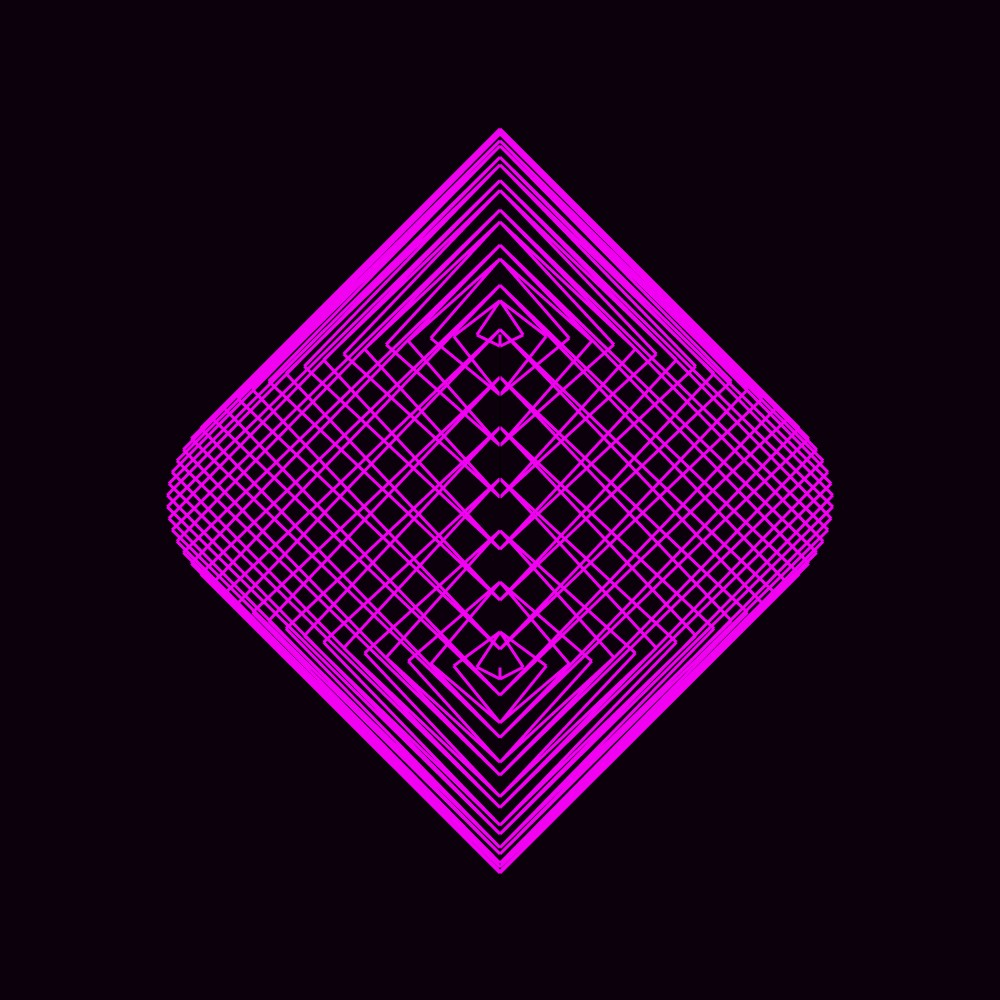
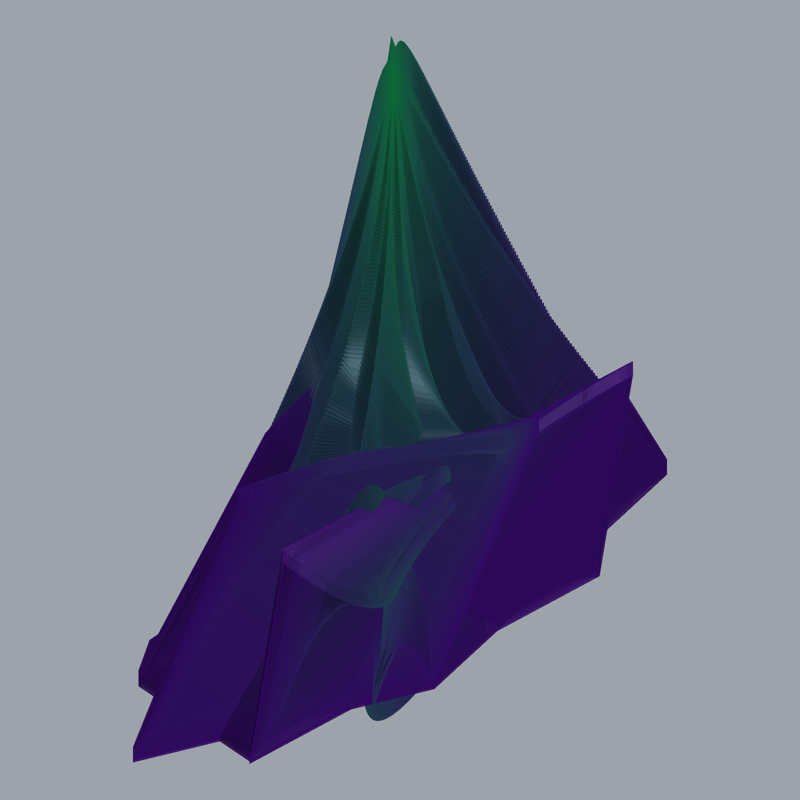

NATALIE CAMPOS
CSMA 111
Introduction to Three-Dimensional Worlds
Mark Ericson
Spring 2021
In this course I learned how to work and model in a
three-dimensional environment. Using a virtual space and
python code I rendered complex objects and animations.
Round Drawings
In this assignment we used fundamental geometric properties of a sphere to draw multiple views of a sphere.

Round Objects
Using Rhinoceros 6.0's python editor we created
round solid objects, using the same principles as the first assignment this time with color, precision and technique.


Round Worlds
This is a video of three models that were generated through Grasshopper software in Rhinoceros 6.0.